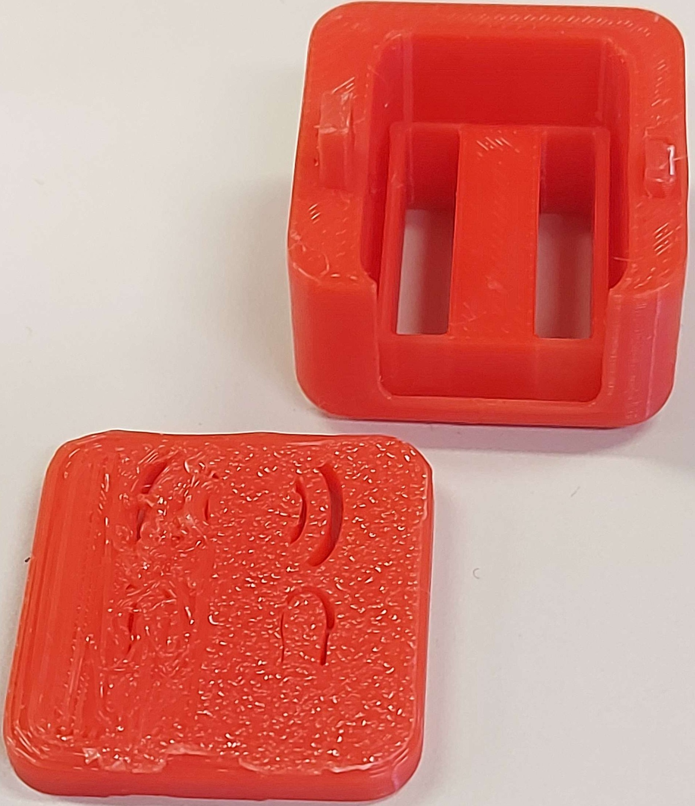
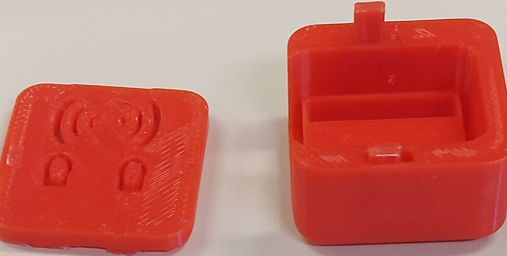
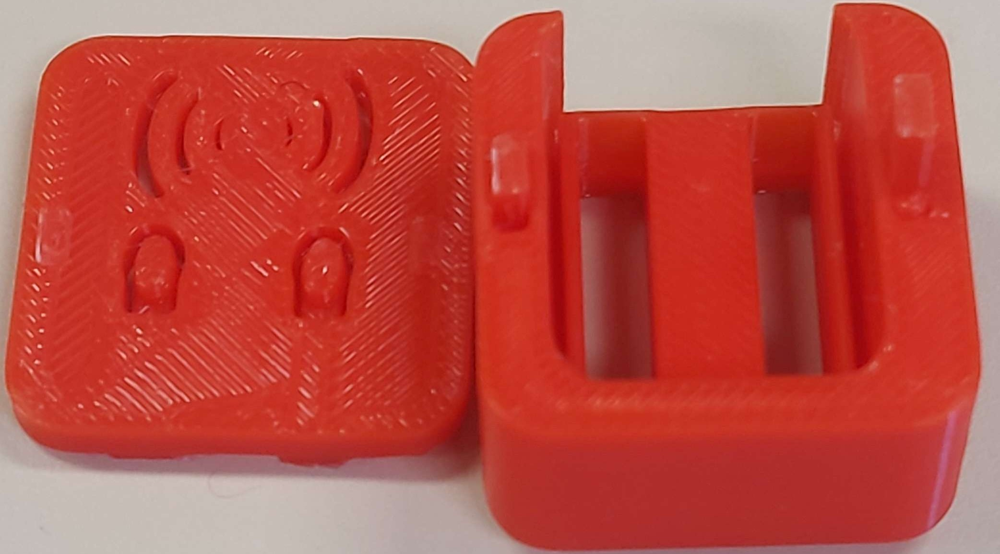
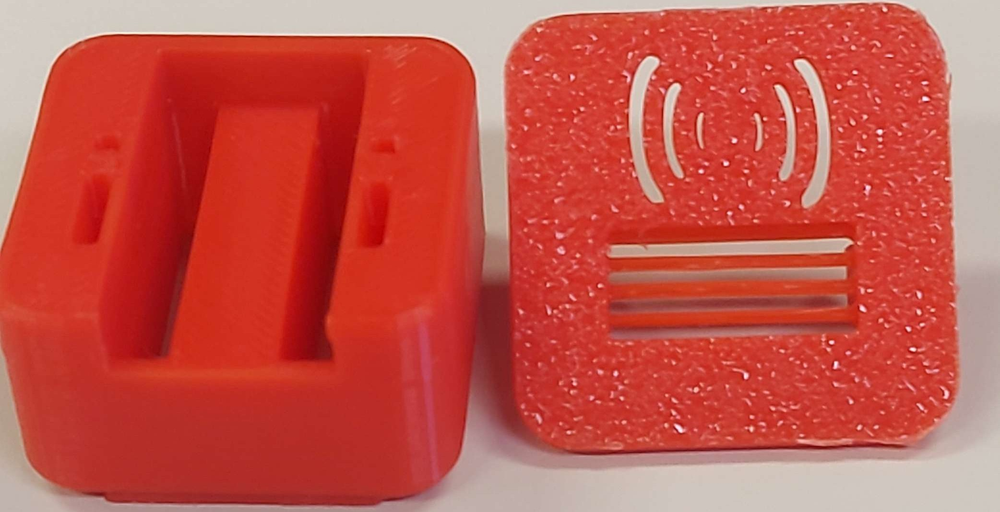
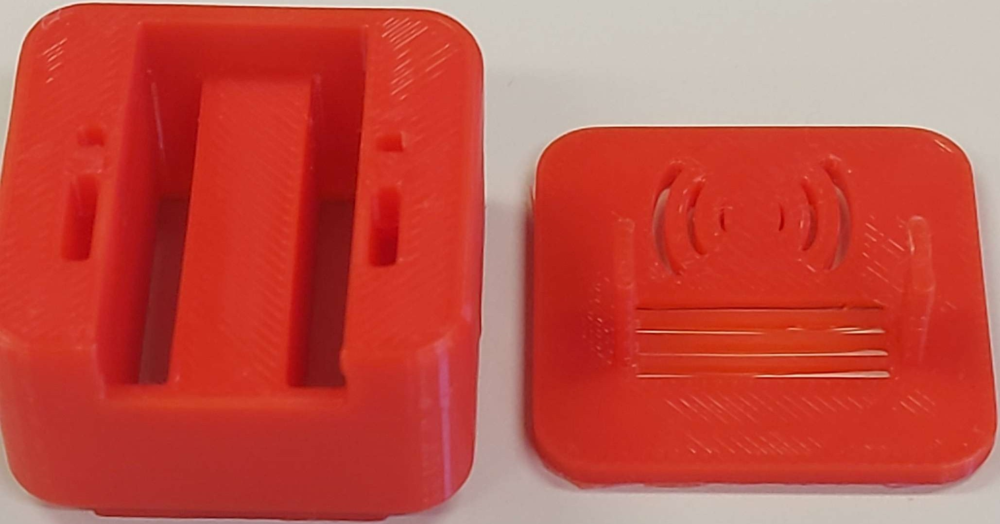
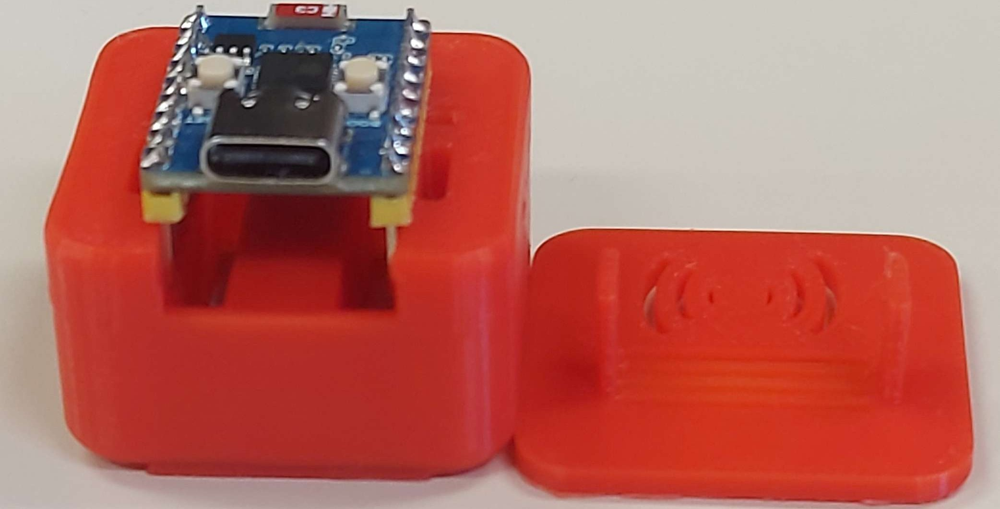
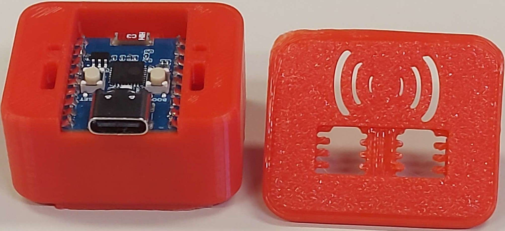
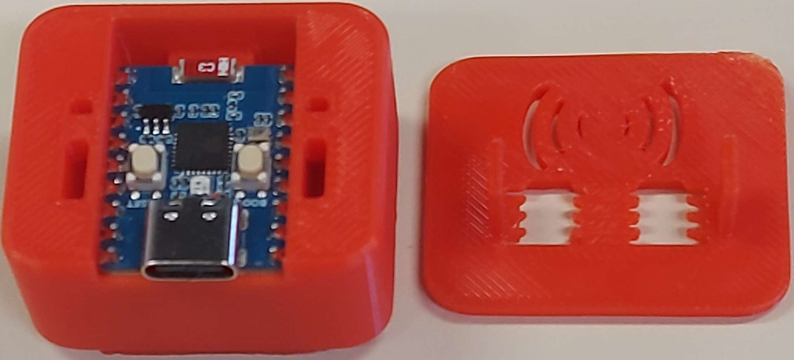
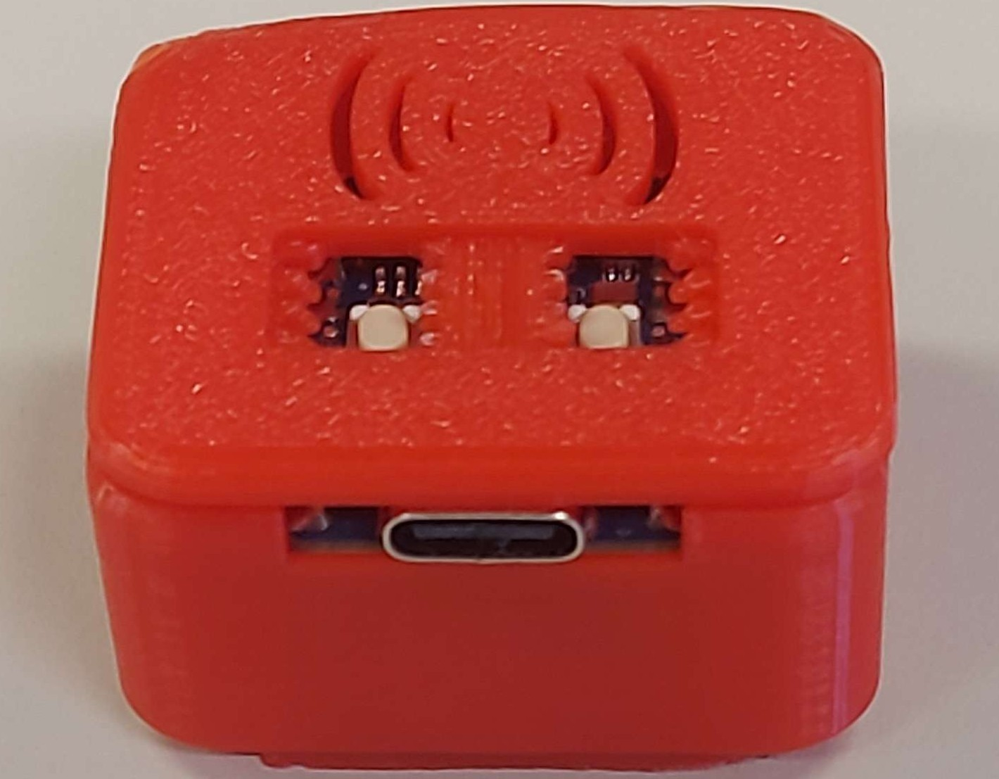
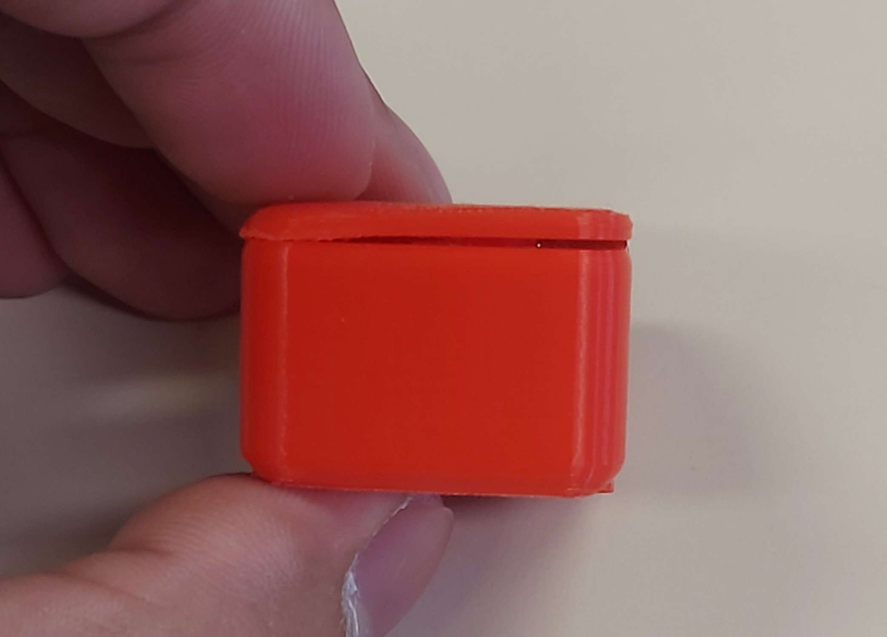

What an absolute mess for a first try.
ESP32 C3 ZERO Case attempt #1



ESP32 C3 ZERO Case attempt #2



ESP32 C3 ZERP Case attempt #3




A failed attempts due to lacking of measurement and printer issue, allowing us to understand what could have been done.
Key features
- A bad attempt that clearly instructs that actual measurement using caliper does not work accurately.
- It gives an idea of adding excessive milimetres to make things work is crucial.
- The lid itself is pretty thick, giving the idea of reducing the milimetre for the next prototype.
- The plastic lock broke, giving the idea of making it thicker to make it work.
- The printer itself gave a clue that it is not perfect. It will melt the bottom part of the prototype.
Advantage(s)?
- Gives us the solid idea(s) what could have been measured.
- Gives us the idea why adding more or extra milimetre for allowance is very important.
Cons, problems, or limitation(s)?
- The lid itself did not really fit and broke during testing.
- Button design did not really work. Lid is pretty thick, therefore the designed button is unlikely to work with this certain design.
- The ESP32 C3 ZERO won't fit due to inaccurate dependency on caliper measurement.
Any plan(s) to make an improvement for the next attempt?
- Naturally I'd increase the height and width of the lid and the body to make sure that it would work.
- Perhaps re-design the lid, make some adjustment and perhaps, add more ventilation.
- Pray that the lid from the upside down wont be melted during the printing processing.